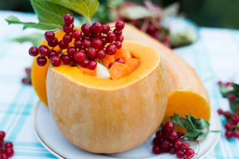

Pavlova with melon 
dkk
Pavlova - russiske pandekager - i honningmelon fra Nordkorea
I det nordlige Kirgisistan består en væsentlig del af kostpyramiden af forskellige kålvarianter og nødder. Mama Dushku fandt på denne ret, som en hyldest til det røde flag med hammer og segl.